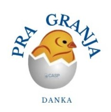

Pra Granja
@pra.granja
Entre em contato conosco!
Instagram
Whatsapp
Catálogo de produtos
Bebedouros 💧
Bebedouro Nipple
Bebedouro Pendular
Comedouros 🐔
Comedouro de corrente S-70
Comedouro Tuboflex
Comedouros Tubulares
Exaustores ✇
Exaustor BF 50 Plus
Ventiladores 💨
Ventilador Tufão 300
Ventilador Tufão M3 Plus
Ventilador VA 92 Plus
Silos para Ração 🛢️
Silos 20/ 24/ 30/ 36
Siloflex 🌽
Siloflex - Distribuidor Automático de Ração
Sistema de resfriamento evaporativo 💦
Sistema de resfriamento evaporativo
Aquecedores 🔥
Aquecedor Thermax